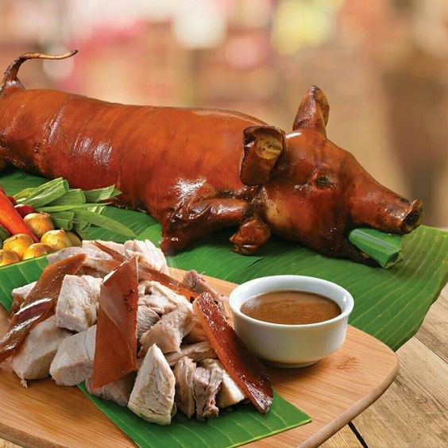

Cuisinang Capampangan: Manyaman!

Lechon Baboy
Ingredients
- Whole pig (about 10-12 lbs)
- 2 stalks lemongrass
- 6 cloves garlic, minced
- 1 large onion, chopped
- 2 tablespoons salt
- 1 tablespoon pepper
- 1/4 cup cooking oil
Time
- Prep Time: 1 hour (marinating)
- Cooking Time: 4-6 hours (roasting)
- Total Time: 5-7 hours
- Servings: 8-12
Procedure
- Marinate: Rub the pig inside and out with garlic, onion, salt, and pepper.
- Stuff with lemongrass.
- Prepare for Roasting: Secure the pig on a roasting spit or place in a large roasting pan.
- Roast: Roast over charcoal or in an oven, basting with oil occasionally, until skin is crispy and meat is cooked through. This can take 4-6 hours.